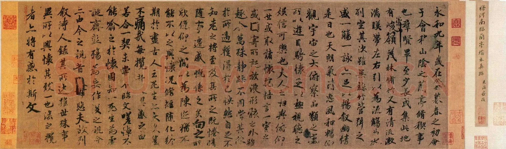
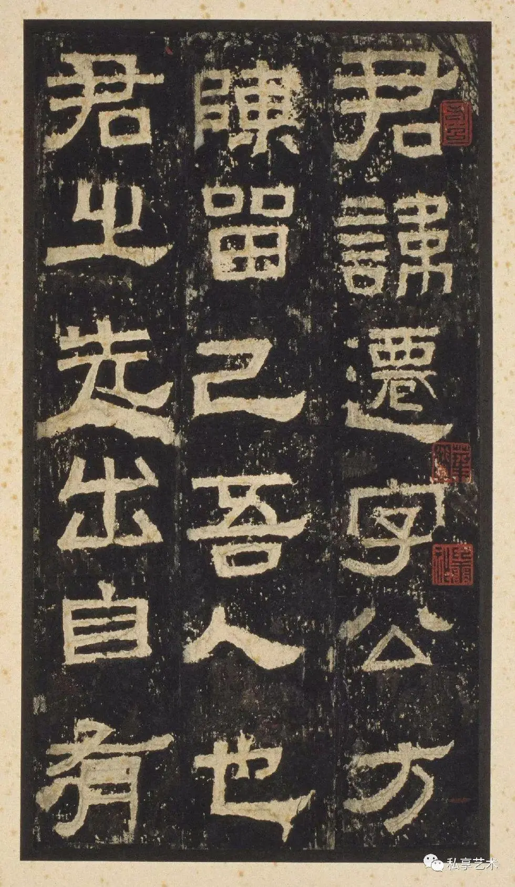
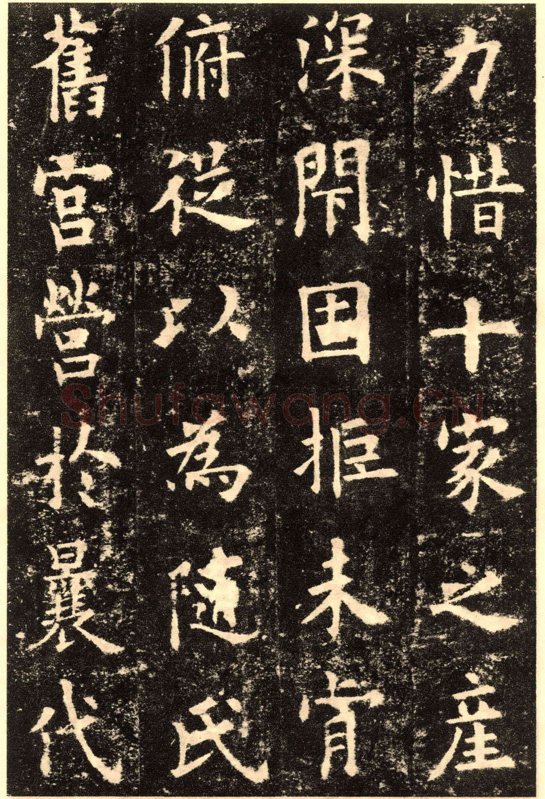
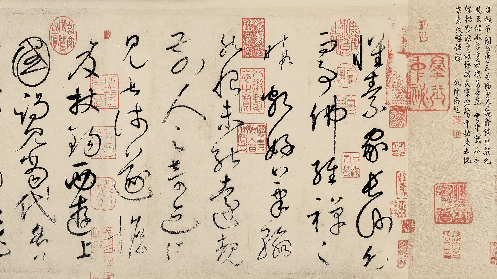
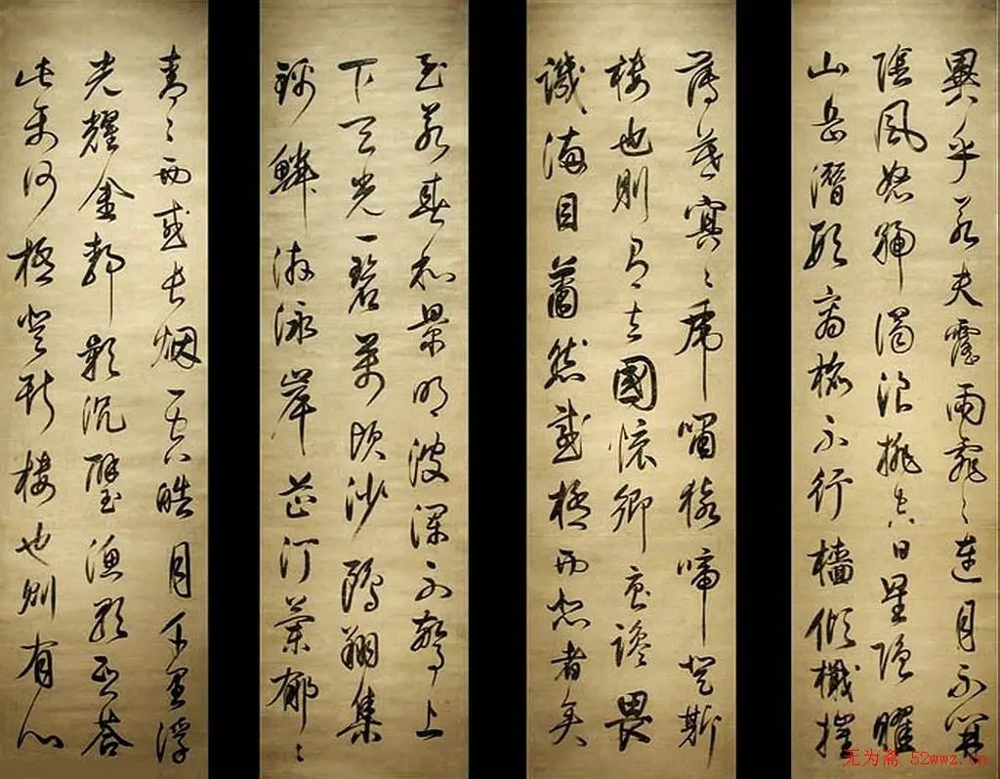

中国书法历经数千年的发展与演变，形成了篆、隶、楷、行、草五种主要书体。每一种书体都承载着特定历史时期的文化精神和审美追求，共同构成了中华文明独特的艺术瑰宝。
从商周甲骨文的古朴神秘，到秦汉隶书的方正博大；从魏晋行草的潇洒飘逸，到唐代楷书的法度森严——书法艺术的演变，正是中国传统文化精神不断传承与创新的缩影。

隶书始于秦代，成熟于汉代，是汉字从古文字向今文字演变的重要转折。张迁碑为东汉隶书名品，结体方正、用笔遒劲，体现了汉代隶书的雄强气度。其笔画蚕头雁尾、一波三折，极具装饰美感。

楷书又称真书、正书，由隶书演变而来。唐代是楷书的鼎盛时期，欧阳询的《九成宫醴泉铭》被誉为"楷书极则"，结体险峻严谨、法度森严，至今仍是学习楷书的典范。
行书介于楷书与草书之间，既有楷书的规整，又有草书的流动。王羲之的《兰亭序》被公认为"天下第一行书"，其笔法变化丰富、气韵生动，展现了行书艺术的最高境界。

草书是书法中最具艺术表现力的书体，追求笔墨的自由与情感的抒发。怀素的《自叙帖》是狂草的巅峰之作，笔势连绵环绕、气势磅礴，被赞为"草书天下称独步"。

《岳阳楼记》是北宋文学家范仲淹的千古名篇，全文通过描绘洞庭湖的壮丽景色，抒发了作者"不以物喜，不以己悲"的豁达胸怀和"先天下之忧而忧，后天下之乐而乐"的崇高理想。此作为行书创作，笔意流畅自然，墨色浓淡相宜，既展现了文章的思想深度，又体现了书法艺术的独特魅力。
作品布局疏密有致，行气贯通，字里行间流露出作者深厚的书法功底和文人气质。整幅作品气势恢宏而不失细腻，堪称行书艺术的典范之作。
《祭侄文稿》是唐代书法家颜真卿为追祭在安史之乱中殉国的侄子颜季明而作。此稿是颜真卿在极度悲愤中写就，笔墨随着情绪起伏跌宕，字里行间充满了深沉的哀思与家国情怀，被后世誉为"天下第二行书"。
全篇笔势雄强，墨色淋漓，情感的起伏直接体现在线条的轻重缓急之中。特别是写到"魂而有知"等句时，笔触愈发激荡，展现了书法艺术作为情感表达载体的最高境界。
在数字化时代，书法艺术仍然焕发着独特的生命力。它不仅是汉字的书写技艺，更是一种修身养性的方式、一种文化认同的载体。练习书法可以培养耐心与专注力，提升审美素养，在快节奏的现代生活中找到一份宁静与从容。
墨韵平台致力于传承和推广中国传统书法文化，让更多人了解书法、爱上书法。无论您是书法初学者还是资深爱好者，都能在这里找到属于自己的一片天地。